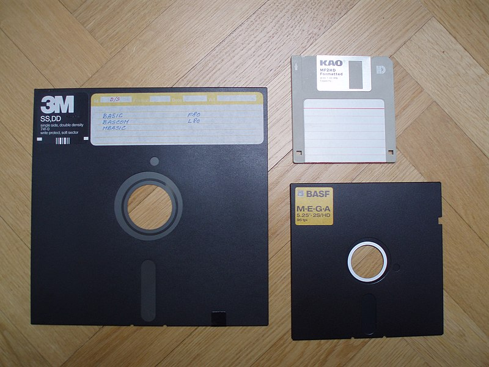

A flopilemez, (angolul: floppy disk)vagy röviden floppy, egy adattároló eszköz, ami egy mágnesezhető felületű vékony, hajlékony lemezből és az ezt védő négyszögletes, keményebb műanyag tokból áll. Író-olvasó készüléke a floppy meghajtó (Floppy Disk Drive, röviden FDD) amit az IBM fejlesztett ki. A lemezek több méretben készültek.
Legelterjetteb floppy típusok(méret alapján):
- -8
- -5
- -25
- -3.5 hüvelykes (collos) méretűek voltak.


Elterjedt adattároló volt, az 1970-es évek közepétől az 1990-es évek végéig használták, de még mindig találkozhatunk vele. Az optikai és a flashmeghajtók a 2000-es évek végére gyakorlatilag teljesen kiszorították, viszont egyes helyeken, mint például régebbi eszközökön biztonsági okokból még mindig használják
Felépítése
A floppy lemez egy kör alakú mind kettő oldalán mágnesezhető réteges műanyag lap amit az ütődésektől, egy színtén műanyag tok védi meg aminek a belső része a nagy lemezeknél filc() borítású. Ebből a tokból nem lehet kivenni a lemezt mivel a benne lévő réseken keresztül fér hozzá az iró és olvasó mechanika.

Típusai:
| Méret: | 8 collos | 5+1/4 collos |
|---|---|---|
| Kapacitás | max 500 kibibájt | commodore 8bit nál 170 KiB, PC nél 360 KiB vagy 1.2 MiB commodore Amiginál 440,880 vagy 1760KiB |
A floppy szerkezete
Az 5 és negyed colos floppy-t külön gépházba beépíthető készüléknek tervezték, ezért minden otthoni számítógép használó be tudott szerezni saját gépébe valót. Nagyon sok számítógép típushoz gyártottak ezért van ennyi féle tároló kapacítású verzió.